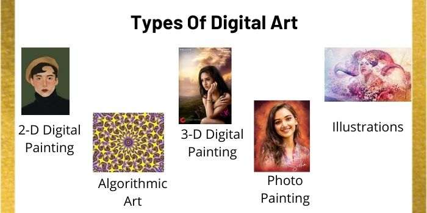

The best way to describe digital art is to simply show examples. Here are a variety of
digital art pieces in all types of styles and designs.

Notable Digital Artists
1. Beeple:
Mike Winkelmann AKA Beeple is one of the most notable digital artists today. He is one of the most valuable
artists in the world due to his digital art piece "Everydays: The First 5000 Days" selling for $69.3 million. It is an abstract
piece of digital images Beeple has created every day since 2007. It can best be described as a collage containing various images,
and these images were made by Beeple himself.
Enter Your Art!
Anyone with the right vision as well as the motive can easily begin creating a form of digital art.
Many do not realize the means to do so are right in the hands of the majority of the population.
We want to see your art. Tag us in the hashtag #TheDigitalizationOfArt for a chance to be showcased
on the view page.